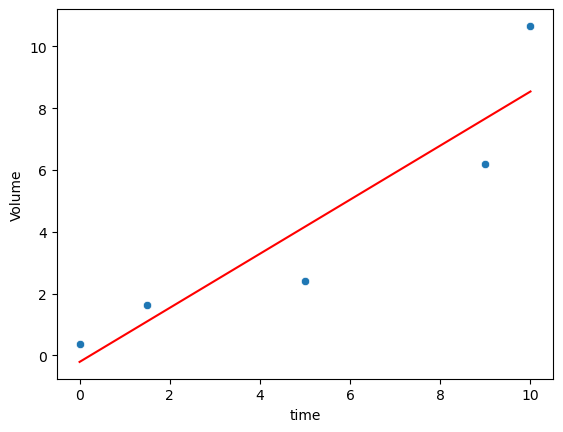
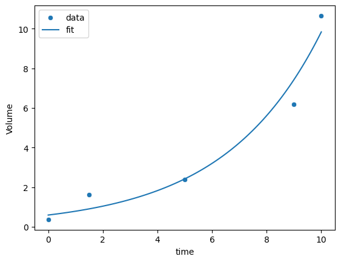

Homework 5 (Due 5/2/2025 at 11:59pm)#
Name:#
ID:#
Submission instruction:
Download the file as .ipynb (see top right corner on the webpage).
Write your name and ID in the field above.
Answer the questions in the .ipynb file in either markdown or code cells.
Before submission, make sure to rerun all cells by clicking
Kernel->Restart & Run Alland check all the outputs.Upload the .ipynb file to Gradescope.
Q1 Linear regression on exponential growth
Suppose we want to measure the growth of a population of bacteria. We culture the bacteria in a test tube. We measure the volume of the cell culture at various times (hr) and obtain the following dataframe:
import pandas as pd
import seaborn as sns
import matplotlib.pyplot as plt
df_bac = pd.DataFrame({'time': [0, 1.5, 5, 9, 10], 'Volume':[0.37, 1.63, 2.4, 6.2, 10.66]})
print(df_bac)
time Volume
0 0.0 0.37
1 1.5 1.63
2 5.0 2.40
3 9.0 6.20
4 10.0 10.66
(1) Use linear regression to fit the data. Compute the \(R^2\). Plot the data and the fitted line on the same figure.
from sklearn.linear_model import LinearRegression
import numpy as np
sns.scatterplot(data=df_bac, x='time', y='Volume')
lm = LinearRegression()
lm.fit(df_bac[['time']], df_bac['Volume'])
sns.lineplot(x=df_bac['time'], y=lm.predict(df_bac[['time']]), color='red')
score = lm.score(df_bac[['time']], df_bac['Volume'])
print(f'R2' , score)
R2 0.8523390725174673

(2) We know that when nutrients are abundant, the bacteria grow exponentially. Therefore, a better model might be
where \(y\) is the volume of the bacteria culture and \(x\) is the time.
Can we turn this into a linear regression problem?
Hint: Take the natural logarithm of both sides of the equation.
After taking the natural logarithm, we have
This is a linear regression problem.
(3) After the transformation, find the optimal values of \(a\) and \(b\). Compute the \(R^2\). Plot the data and the fitted curve in the same figure. Is it better than the linear model?
# exponential growth
lm2 = LinearRegression()
lm2.fit(df_bac[['time']], np.log(df_bac['Volume']))
a = np.exp(lm2.intercept_)
b = lm2.coef_[0]
print(a, b)
# compute R2
y_pred = a * np.exp(b * df_bac['time'])
mse = np.mean((df_bac['Volume'] - y_pred) ** 2)
var = np.var(df_bac['Volume'])
r2 = 1 - mse / var
print('R2 = ', r2)
# the R2 is higher than the linear model
# plot the exponential fit
sns.scatterplot(data=df_bac, x='time', y='Volume')
xx = np.linspace(0, 10, 100)
yy = a * np.exp(b * xx)
sns.lineplot(x=xx, y=yy)
# add legend
_ = plt.legend(labels=["data","fit"])
0.5954551711492088 0.2805094137824159
R2 = 0.9605944747794365

Q2 Multiple linear regression
In this problem, we would like to predict the body_mass_g of a penguin based on the other features in the dataset.
# Do not modify this cell
df = sns.load_dataset("penguins")
df.dropna(inplace=True)
from sklearn.model_selection import train_test_split
# the stratify parameter makes sure that the train and test sets have the same proportion of species
df_train, df_test = train_test_split(df, test_size=0.5, random_state=0, stratify=df['species'])
In this exercise, Let’s consider what is the best subset of features to predict body_mass_g. This is called the best subset selection problem.
Since we have 3 features, we can fit 7 models, each with a different subset of features:
Model 1:
bill_length_mmModel 2:
bill_depth_mmModel 3:
flipper_length_mmModel 4:
bill_length_mm,bill_depth_mmModel 5:
bill_length_mm,flipper_length_mmModel 6:
bill_depth_mm,flipper_length_mmModel 7:
bill_length_mm,bill_depth_mm,flipper_length_mm
For each model, fit a linear regression model and compute the \(R^2\) on the training and testing data. Which model has the best \(R^2\) on the testing data? Is the best model the one with the most features?
# Feel free to use this variable.
# all_subsets = [ ['bill_length_mm'], ['bill_depth_mm'], ['flipper_length_mm'],
# ['bill_length_mm', 'bill_depth_mm'], ['bill_length_mm', 'flipper_length_mm'], ['bill_depth_mm', 'flipper_length_mm'],
# ['bill_length_mm', 'bill_depth_mm', 'flipper_length_mm']]
# Alternatively, you can check out itertools.combinations (part of the Python standard library) to generate all combinations of a list
from itertools import combinations
features = ['bill_length_mm', 'bill_depth_mm', 'flipper_length_mm']
best_subset = []
best_score = 0
for L in range(1, len(features) + 1):
for subset in combinations(features, L):
lm = LinearRegression()
lm.fit(df_train[list(subset)], df_train['body_mass_g'])
test_score = lm.score(df_test[list(subset)], df_test['body_mass_g'])
train_score = lm.score(df_train[list(subset)], df_train['body_mass_g'])
print(f'{subset}: {train_score:.4f} {test_score:.4f}')
if test_score > best_score:
best_score = test_score
best_subset = subset
print(f'best subset: {best_subset} {best_score:.4f}')
('bill_length_mm',): 0.3792 0.3101
('bill_depth_mm',): 0.2185 0.2134
('flipper_length_mm',): 0.7489 0.7731
('bill_length_mm', 'bill_depth_mm'): 0.4890 0.4385
('bill_length_mm', 'flipper_length_mm'): 0.7523 0.7689
('bill_depth_mm', 'flipper_length_mm'): 0.7508 0.7745
('bill_length_mm', 'bill_depth_mm', 'flipper_length_mm'): 0.7532 0.7705
best subset: ('bill_depth_mm', 'flipper_length_mm') 0.7745
Q3 Working with categorical variables
Let’s try to make use of the species feature in predicting the body_mass_g
# Do not modify this cell
df_penguins = sns.load_dataset("penguins")
df_penguins.dropna(inplace=True)
We can think of two different methods to encode the categorical feature:
Method 1: Using integer 1, 2, 3 …
Method 2: Using dummy variables such as
is_category_A, whereis_category_Ais 1 if the category is A, 0 otherwise.
In this problem, we will compare the two methods.
For our dataset, the species are ['Adelie', 'Chinstrap', 'Gentoo'].
Let’s generate a few new features in df_penguins:
codeis 0 if the species is Adelie, 1 if the species is Chinstrap, 2 if the species is Gentoois_Adelieis 1 if the species is Adelie, 0 otherwiseis_Chinstrapis 1 if the species is Chinstrap, 0 otherwise
The is_Adelie and is_Chinstrap features are called dummy variables.
df_penguins['is_Adelie'] = df_penguins['species'] == 'Adelie'
df_penguins['is_Chinstrap'] = df_penguins['species'] == 'Chinstrap'
# encode species as 0 1 2
code = {'Adelie': 0, 'Chinstrap': 1, 'Gentoo': 2}
df_penguins['code'] = df_penguins['species'].map(code)
After generating these new features, split the new augmented dataframe into training and testing sets use the following command
# Do not modify this cell
df_penguins_train, df_penguins_test = train_test_split(df_penguins, test_size=0.5, random_state=0, stratify=df_penguins['species'])
(2) Compare the performance using different combinations of features. Compute the \(R^2\) on training and testing sets. Which one is the best?
Baseline:
['bill_length_mm', 'bill_depth_mm', 'flipper_length_mm']Use code:
['bill_length_mm', 'bill_depth_mm', 'flipper_length_mm', 'code']Use dummy:
['bill_length_mm', 'bill_depth_mm', 'flipper_length_mm', 'is_Adelie', 'is_Chinstrap']
# we define a helper function for our workflow: take some features, fit a linear regression model, and return the R2 score
def get_score(df_train, df_test, features):
lm = LinearRegression()
lm.fit(df_train[features], df_train['body_mass_g'])
train_score = lm.score(df_train[features], df_train['body_mass_g'])
test_score = lm.score(df_test[features], df_test['body_mass_g'])
return train_score, test_score
features = ['bill_length_mm', 'bill_depth_mm', 'flipper_length_mm']
train_score, test_score = get_score(df_penguins_train, df_penguins_test, features)
print(f'Baseline: Train score: {train_score:.3f}, Test score: {test_score:.3f}')
features = ['bill_length_mm', 'bill_depth_mm', 'flipper_length_mm', 'code']
train_score, test_score = get_score(df_penguins_train, df_penguins_test, features)
print(f'Use code: Train score: {train_score:.3f}, Test score: {test_score:.3f}')
features = ['bill_length_mm', 'bill_depth_mm', 'flipper_length_mm', 'is_Adelie', 'is_Chinstrap']
train_score, test_score = get_score(df_penguins_train, df_penguins_test, features)
print(f'Use dummy: Train score: {train_score:.3f}, Test score: {test_score:.3f}')
# the dummy variables are better than the code variable
# In general, encoding categorical variables as integers 1 2 3 is not a good idea, because it implies an order between the categories that does not exist.
# However, in some case, when the categories are age groups, it can make sense to encode them as 1 2 3, as there is an order between the categories.
Baseline: Train score: 0.753, Test score: 0.770
Use code: Train score: 0.763, Test score: 0.760
Use dummy: Train score: 0.851, Test score: 0.839